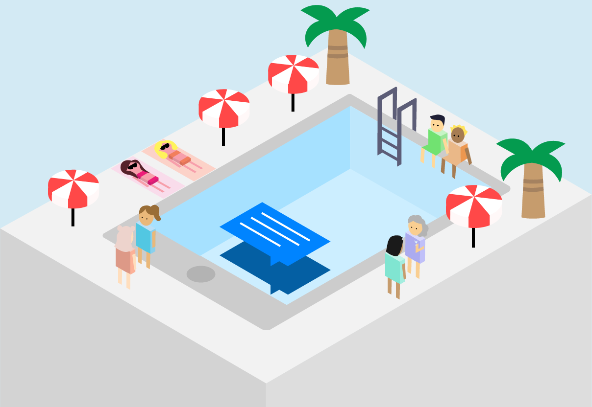

Cashbot.ai Landing Pages
Summer 2018
Website redesign task for two types of customers
Cashbot.ai has two target audiences: chatbot creators and businesses.
Chatbots creators hold influence over a base of loyal users with specific
interests making for an ideal yet untapped market. Cashbot.ai is the software
solution for these creators to tailor native ads for their users and profit
from every purchase. On the other hand, businesses looking to acquire customers
can referred by these developers and access their engaged audience.
PROCESS
My process for the overall feel and look for the pages started with the company's
values, as discovered in a branding workshop our company did together. Our CEO
pushed for irreverence, which I took as an opportunity to develop a light-hearted,
clean website.
I created the graphics in Adobe Illustrator. My vision was to bring out the uniqueness of
the company through illustrations.
USER TESTING
I tested the prototypes on various businesses in the Skydeck Accelerator,
UC Berkeley’s partner investment fund. I gauged if users could understand the purpose of
the website and if the design appealed to them.
IN RETROSPECT
Things I would fix/add:
- “Did you know?” looks too much like a button, and it isn’t clickable.
I would either remove it or restructure the four pieces to fit in a box grid together.
- Animate the illustrations!
- Experiment with font size, weight, and color more.
Tools
A/B Testing
Sketch
Adobe Illustrator